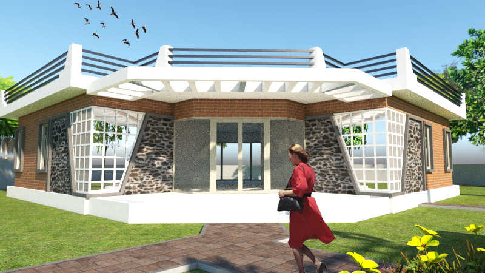
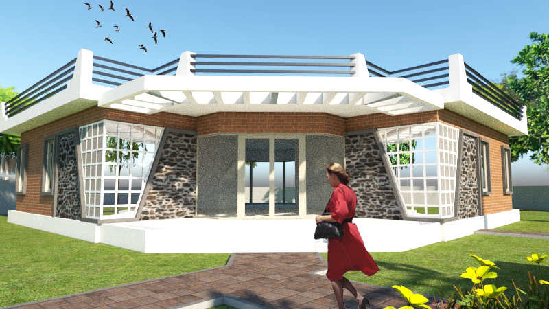

About the Practice
Earthen Signatures operates at the intersection of architectural design, environmental performance, and research, informed by over two decades of professional and academic engagement.

Principal Architect
Shyamal Mishra
Shyamal Mishra
Council of Architecture registered architect with 20+ years of experience in design, housing studies, and environmental analysis.
 
